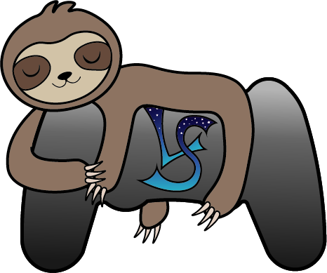
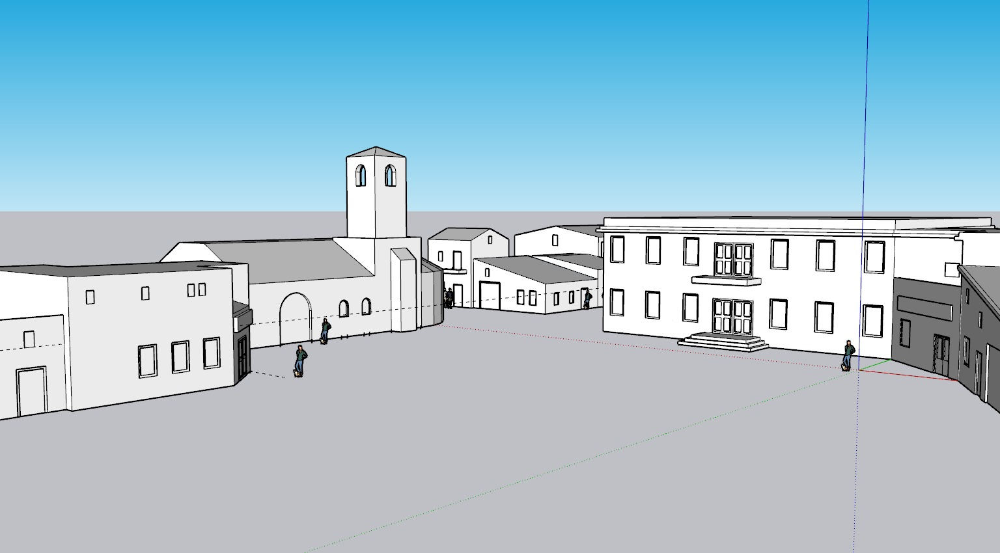
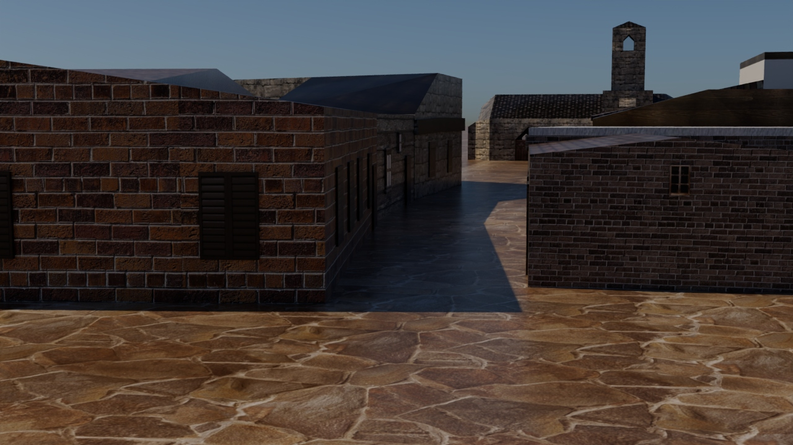
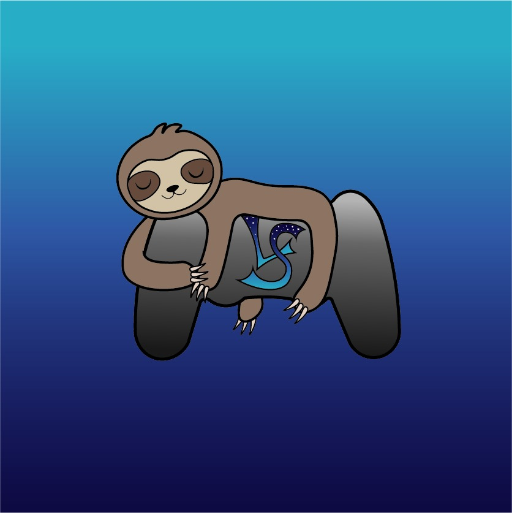

Estudio de desarrollo de videojuegosProyecto universitario
LAZYSOFT — Estudio de videojuegos

El secreto de Monteviejo
Aventura narrativa en 3D. Ya puedes probar la versión en desarrollo.

Estamos montando el tráiler.
Cuando esté listo lo verás aquí y en nuestro canal de YouTube.
Tráiler y versión jugable
La versión en desarrollo se puede jugar aquí mismo, sin instalar nada. Es temprana y la vamos actualizando según avanza el proyecto.
Jugar aquíJuega en el navegador
Haz clic dentro del juego para empezar.

Necesitas teclado y ratón. Si lo prefieres a pantalla completa, ábrelo en itch.io.
Marketing
¿Para quién hacemos este juego?
Antonio trabaja para la consejería y llega a Monteviejo en septiembre para pasar dos meses haciendo un informe. Se encuentra un pueblo partido en dos bandos desde hace años, vecinos que se vigilan desde la ventana y una historia de la que nadie habla en voz alta. Tú decides con quién hablar, qué preguntar y a quién creer.
«Elige bien tu bando, hijo».
A quién va dirigido
Juegos parecidos
Ver detalles técnicos
- Género
- Aventura narrativa de investigación
- Perspectiva
- Tercera persona en exteriores / Primera persona en interiores
- Plataforma
- PC, con teclado y ratón
- Motor
- Unity
- Idioma
- Español
- Edad
- A partir de 7 años
- Modelo de negocio
- Compra única, con crowdfunding inicial y DLC con nuevos cuerpos que identificar
Arte &
desarrollo.
Bocetos, diseños de personajes, escenarios, interfaces y la tipografía de El secreto de Monteviejo.
Material en desarrollo.
Compartiremos nuevas piezas conforme avance el desarrollo: escenarios, personajes y pruebas en el motor.
6 integrantes
Equipo de LazySoft.
Somos un equipo de seis estudiantes que desarrolla el videojuego "El secreto de Monteviejo" como proyecto universitario.

LazySoft,equipo de desarrollo
La trayectoria
de LazySoft.
Los juegos y proyectos que hemos desarrollado como equipo.
Próximamente compartiremos aquí nuestros proyectos anteriores.
Contacto
Para comentarnos algo del juego, proponer una colaboración o saludar al equipo. También puedes escribirnos directamente:
lazysoftstudio@gmail.com